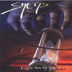

| Artist: | Saens |
| Title: | Escaping The Hands Of God |
| Label: | Cyclops CYCL 110 |
| Length(s): | 73 minutes |
| Year(s) of release: | 2002 |
| Month of review: | [10/2002] |
| 1) | Babel Lights | 16.34 |
| 2) | Ayanda | 11.51 |
| 3) | The Crawler | 13.49 |
| 4) | Alone | 16.23 |
| 5) | Requiem | 11.25 |
| 6) | Epilogue | 3.35 |
Ayanda is an instrumental that has a more quiet build up than its predecessor, aside from being carried by what sounds like some kind of electronic sax. This track is nice, but due to its length and tranquility comes dangerously close to meandering at times, only kept from there by the occasional mini-experiment. Despite undoubtedly good intentions, the female semi high pitched vocals added in the second half of the track don't really help.
The Crawler has an easy start, with a slow flowing intro moving into the initial vocal section. Not until several minutes into the track do we get some eclectic guitaristics dueling with a clear sounding piano. Nice. Although this level isn't quite mantained, the track has opened up now, and brings us some more dramatic stuff. Including a semi rumba intermezzo. Funny, guys. A track with ups and downs.
Alone has a rather revered start, chiming and a humming choir which could just as well have been in church. The inflowing guitar leads us into a rather happy sounding section that pretty much spoils the initial effect. As the vocals set in, though, things get serious (enough) again to move into a longish section that's not particularly striking: not until several minutes do we move into building towards the climax.
Requiem has a combination of French vocals and Latin chanting, showing once more that vocals tend to sound better when people use their native language, or at least one in which they're fluent. Aside from this vocal improvement, the solumn graveness of this track easily makes it the best on the album.
Epilogue is exactly what its title suggests. The combination of cello and flute makes for a nice ending to this album.